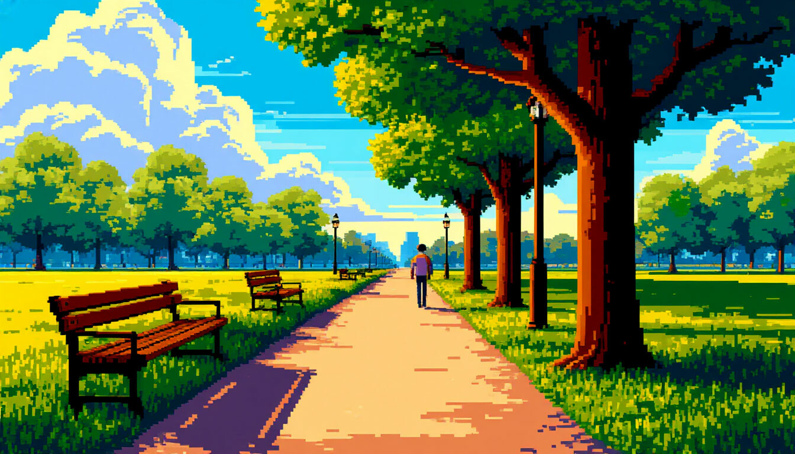

Спорт

Гулять десять тысяч шагов
Проходить не меньше десяти тысяч шагов за день: часть дороги пешком и прогулка после ужина.
Придерживаются187
Выполнено всеми4 268
Выхожу на остановку раньше — норма набирается сама собой.
Все комментарии (7)